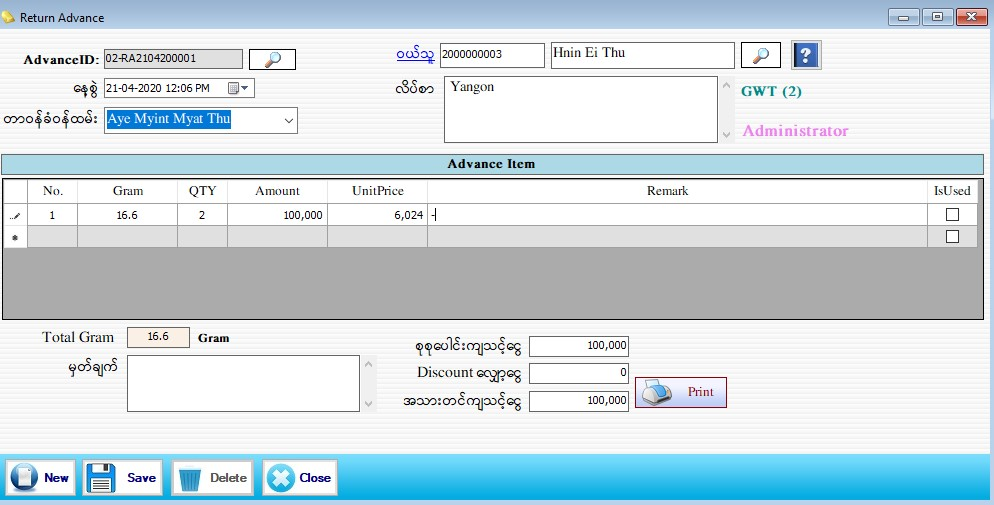

Return Advance

- ဒုံးဖြတ် ၀ယ်ယူထားသော ရွှေထည်များသတ်မှတ်ရန်အတွက် Transaction အောက်မှ Return Advanceကို Clickပါ။
- Advance ID ကို Software မှ Auto တပ်ပေးပါသည်။နေ့စွဲတွင် လက်ရှိရောက်နေသော Date ကိုပြပေးပါသည်။
- တာ၀န်ခံ၀န်ထမ်း၊ ၀ယ်သူတို့ကိုသတ်မှတ်ပါ။ ၀ယ်သူ၏ Code No. ကို အလွတ်သိရှိပါက ရိုက်ထည့်လိုက်လျှင် Auto ကျလာမည်။အလွတ်မသိရှိပါက၀ယ်သူဘေးရှိမှန်ဘီလူးကိုနှိပ်ပြီးရွေးချယ်နိုင်ပါသည်။
- Gram, Qty and Amount တို့ကိုဖြည့်စွက်ပါ။Unit Price တွင်Gram ချိန်နှင့် Amount ပေါ်မူတည်ပြီး (1 Gram) ကျသင့်နှုန်းကိုတွက်ချက်ပေးပါသည်။
- Gram, Qty နှင့် Amount တို့ကိုဖြည့်စွက်လိုက်ပါက Total Gram နှင့် စုစုပေါင်းကျသင့်ငွေတွင် Auto ကျနေပါမည်။
- Discount လျှော့ငွေ တို့ကိုဖြည့်စွက်ပါ။အသာတင်ကျသင့်ငွေတွင် (စုစုပေါင်းကျသင့်ငွေ - Discount လျှော့ငွေ)ကိုနုတ်ပြီးအသာတင်ကျသင့်ငွေကိုတွေ့မြင်နိုင်ပါသည်။
- Data များဖြည့်ပြီးပါက Save Button ကိုနှိပ်၍ သိမ်းဆည်းနိုင်ပါသည်။
- သိမ်းဆည်းပြီးသား Data များအား ပြန်လည်ကြည့်ခြင်း၊ ပြင်ဆင်ခြင်းများပြုလုပ်ချင်ပါက Advance ID ၏ ဘေးတွင် ရှိသော မှန်ဘီလူး button ကိုနှိပ်ပြီးပြန်လည်ကြည့်ရှုပြင်ဆင်ချင်သော Voucher အား ရွေးချယ်ပြီးပြင်နိုင်ပါသည်။
- သိမ်းဆည်းပြီးသား ထည့်ပြီးသား Data များကို ဖျက်လိုလျှင် မှန်ဘီလူး button အားနှိပ်ပြီးရှာပါ။ ထို့နောက် မိမိဖျက်လိုသော Data ကို Delete Button ကိုနှိပ်၍ ဖျက်နိုင်ပါသည်။
- Return Advance အသစ်ထည့်လိုပါက New Button ကိုနှိပ်ပြီး အသစ်ထည့်နိုင်ပါသည်။
- Return Advance Form အား အသုံးပြုပြီးပါက Close Button ကိုနှိပ်၍ ပိတ်နိုင်ပါသည်။